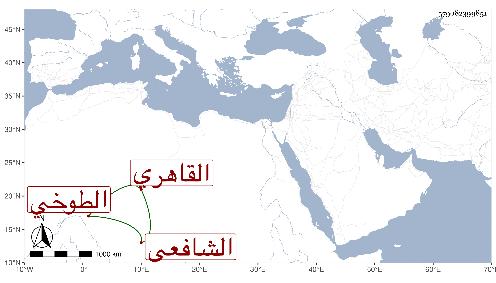

0902Sakhawi.DawLamic.ITO20230111-ara1.EIS1600.579082399851
Biography ID: 579082399851
514
أحمد بن محمد بن محمد بن عثمان بن موسى بن علي الشهاب أبو العباس الطوخي ثم القاهري الشافعي والد المحب محمد الآتي . من بيت صلاح وديانة قال شيخنا في أنبائه كان جيد الخط حسن الضبط سريع الكتابة جدا يقال إنه كان يكتب بالمدة الواحدة عشرين سطرا . مات في سنة اثنتين ووصفه البدر الزركشي في عرض بعض أولاده بالأخ في الله الشيخ الإمام المحقق الصالح القدوة ، وابن الملقن بالفقيه الإمام العالم الفاضل الصالح الأصل ، والأبناسي بالشيخ الإمام العلامة والصدر المناوي بالإمام الفاضل الناسك العابد المعتقد صاحب الأصالة المرضية والديانة الزكية ، والبرشنسي بالإمام العالم العامل الورع الناسك الكامل ، والركراكي بالإمام العالم العلامة .
